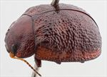
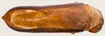
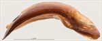
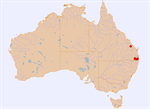

Click on images to enlarge
{kind=link}

Male, Wiangaree, NE New South Wales.
{kind=link}

Aedeagus, dorsal view (Acacia Plateau, via Legume, NE New South Wales)
{kind=link}

Aedeagus, lateral view (Acacia Plateau, via Legume, NE New South Wales)
{kind=link}

Distribution
Name
Trachymela sp. Ta178
Reference specimen
1997-076, Simes Road, Wiangaree, NE New South Wales.
Adult Description
Length: ♂ 6.4-6.6 mm (n=2), ♀ 6.4-7.6 mm (n=6).
Colouration:
- Head: Mid- to dark brown, uniform; anterior margin between labrum and fronto-clypeal suture usually infuscate to black; mandibles dark brown with black apices. Antennomeres 1–3 pale brown, 4–7 gradually infuscated, 8–11 dark brown to black in males, moderately infuscated in females.
- Pronotum: Brown, concolorous with or slightly darker than head, shade subuniform with only vague darker infuscations; lateral margins usually partially or fully bordered with black.
- Scutellum: Dark brown, similar shade as pronotal disc; usually broadly edged in slightlydarker brown.
- Elytra: Brown, concolorous with darkest areas of pronotum; humeral calli similar shade or very slightly darker brown; a common area around elytral summit often with large, dark-brown or black macula. Punctures concolorous with or slightly darker than interstices. Verrucae mostly concolorous with interstices, at most slightly darker, lateral margin usually black.
- Venter & Legs: Head and usually all or most of prothoracic ventrite black, elsewhere either uniformly mid to dark brown, sometimes with darker areas on parts of thoracic ventrites; abdominal ventrites slightly paler; elytral epipleura usually brown, partially grading towards black, rarely completely black.
- Cuticular Wax: marginal wax pattern.
Morphology:
- Head: Punctures fine (puncture diameter ≈ 1–1.5× eye facet diameter), rarely coarser, dense and slightly unevenly distributed. Antennae relatively long in males, short in females, filiform (AL/BL: ♂ 40–42%, ♀ 31.3%).
- Pronotum: Transversely evenly convex; foveal depression moderate to weak, with foveal tubercle broad and punctured. Discal surface slightly uneven, nitid; puncturation distinctly impressed, similar in size to or slightly larger than head punctures, dense (interspaces 1.5-2 x pd), becoming noticeably coarser laterally. Anterior angles rounded, sub-rectangular; lateral margins smoothly curved, widest near posterolateral angles.
- Scutellum: Moderately punctate; punctures similar in diameter to adjacent pronotal punctures but sometimes shallower.
- Elytra: in lateral view, evenly rounded over anterior half, curvature increasing noticeably posteriorly; anteromedian depression faint. Surface rough with mostly convex interstices and small and inconspicuous verrucae, some with a very fine central puncture, that are scattered in anterior half of disc, but aligned and relatively widely spaced along VR2-VR6 in posterior half, some verrucae may align transversely just behind antero-median depression to form short irregular ridges; punctures evenly distributed across disc, obscured by rugose interstices towards apex. Humeral callus continuous or slightly discontinuous with lateral margin. Vertical epipleural extension relatively small (HCE/PW = 0.31-0.34).
- Venter: Prosternal process narrowest anteriorly, gradually widening posteriorly, closed anteriorly; prosternal process and mesosternum glabrous or with very sparse setae; anterior, median, and posterior trochanters each bearing a single long seta; anterior margin of metaventrite flat, bevelled; inner margin of epipleura lacking setae.
Male Genitalia (Aedeagus):
- Dimensions: Moderately long (LPE/BL = 36-38%), moderately slender (WPE\LPE = 0.24-0.27).
- Dorsal view: Sides of shaft subparallel from base, widening at ostium to maximum width across anterior half of ostial opening, then converging evenly to a small, triangular apex. Dorsal surface lightly sclerotised; dorsomedian channel very faint or absent; ostium semi-ovate, not closed posteriorly, with paired dorsal ostial processes extending anteriorly to spatula.
- Lateral view: Shaft moderately curved basally, curvature even and gentle distally to apex; apical tip deflexed.
Immature Stages
- Unknown.
Similar species
- Ta165: This species is of the same size and is morphologically very similar to Ta178, and their geographical ranges likely overlap. They can usually be separated by the colouration of the head: on specimens of Ta165, it is completely brown, lacking the black areas present on the clypeus of Ta178. Ta165 tends to be darker ventrally than Ta178. The aedeagi of the two species are almost identical in shape, but that of Ta178 is longer and slightly wider (LPE=36-38%BL) than that of Ta165 (LPE=30-34%BL). The antennal segmentation pattern, as measured by the ratio of (A6–A11)/AL, is similar for the two species.
- Ta21: Small individuals of Ta21 can be very difficult to separate from Ta178 on external morphology alone.
The aedeagus of Ta21 is shorter (LPE=29-35%BL) and lacks the slight constriction behind the ostium. Female specimens have a different antennal segmentation pattern to those of Ta21, with an (A6–A11)/AL ratio between 0.44 and 0.46 (n=3) compared with a range of 0.48–0.50 (n=10) for Ta21.
Notes
- Taxonomy: Ta178 is one of the species in the piceola group, that also includes the very closely related Ta21, Ta170 and Ta165. These taxa are not well delimited and it is very possible that particularly Ta178 and Ta165 are variants of the same species.
- Distribution & Abundance: Most specimens assigned to this species have been collected in the mountains of the New South Wales/Queensland border, with a single outlier record of a female from Kroombit Tops. The Kroombit Tops specimen has the anterior half of the elytral suture black, but is otherwise essentially identical morphologically with other specimens.
- Host Plants: There is a record from Eucalyptus interstans (Symphyomyrtus: Liberivalvae) and an unidentified smooth-barked eucalypt.
Copyright © 2026. All rights reserved.